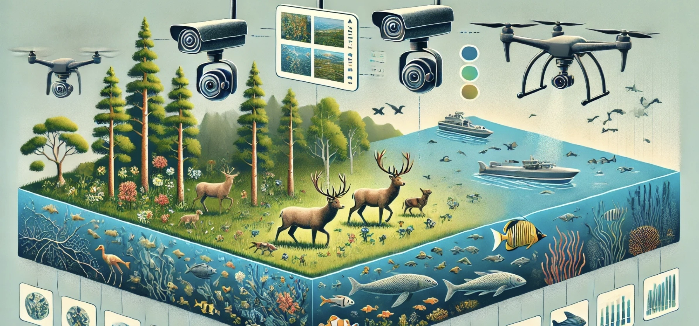

<main>
    <section class="hero-container">
        
    </section>

    <div class="post-list-container">
        <ul class="post-list">
            
            <li>
                <span class="category-badge">Behavior</span>
                <a href="collective-animal-behavior-ai.html">Beyond Individual Animals: How AI and Sensors Are Reshaping Collective Behaviour Research</a>
                <span class="date">March 1, 2026</span>
            </li>

            <li>
                <span class="category-badge">Tech</span>
                <a href="individual-animal-recognition-ai.html">How AI Is Learning to Recognize Individual Animals</a>
                <span class="date">February 15, 2026</span>
            </li>

            <li>
                <span class="category-badge">Methodology</span>
                <a href="poser-automated-behavior-scoring.html">PoseR: Automating Behavioral Descriptions</a>
                <span class="date">February 9, 2026</span>
            </li>

            <li>
                <span class="category-badge">Welfare</span>
                <a href="animal-emotion-vocalizations.html">AI Decodes Animal Emotions through Vocalizations</a>
                <span class="date">February 1, 2026</span>
            </li>

            <li>
                <span class="category-badge">Datasets</span>
                <a href="mammalps-wildlife-behavior.html">Decoding Behavior with MammAlps</a>
                <span class="date">January 25, 2026</span>
            </li>

            <li>
                <span class="category-badge">Research</span>
                <a href="oregon-state-species-id.html">Boosting Accuracy in the Field</a>
                <span class="date">January 25, 2026</span>
            </li>

            <li>
                <span class="category-badge">Market</span>
                <a href="animal-health-market-growth.html">The $3 Billion Animal Health Market</a>
                <span class="date">January 25, 2026</span>
            </li>

            <li>
                <span class="category-badge">Welcome</span>
                <a href="welcome-to-the-animal-ai-observer.html">Welcome to the Animal AI Observer</a>
                <span class="date">January 20, 2026</span>
            </li>

        </ul>
    </div>
</main>
